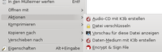
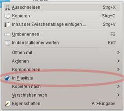

KDE-Servicemenüs
Dieser Artikel wurde für die folgenden Ubuntu-Versionen getestet:
Dieser Artikel ist größtenteils für alle Ubuntu-Versionen gültig.
Zum Verständnis dieses Artikels sind folgende Seiten hilfreich:
Root-Rechte, optional
Rechte für Dateien und Ordner ändern, optional
Installation von Programmen, optional
 KDE-Servicemenüs sind Einträge, die abhängig vom ausgewählten Dateityp im Kontextmenü  der Dateimanager Dolphin und Konqueror erscheinen. Die Arbeit mit Dateien wird durch die Servicemenüs erheblich vereinfacht. Beispiele für standardmäßig installierte Servicemenüs sind die Optionen für Musik-Dateien "Amarok: An Wiedergabeliste anhängen" oder "Archiv hierher auspacken" für komprimierte Dateien.
der Dateimanager Dolphin und Konqueror erscheinen. Die Arbeit mit Dateien wird durch die Servicemenüs erheblich vereinfacht. Beispiele für standardmäßig installierte Servicemenüs sind die Optionen für Musik-Dateien "Amarok: An Wiedergabeliste anhängen" oder "Archiv hierher auspacken" für komprimierte Dateien.
Die Erstellung von Servicemenüs erfordert keine großen Kenntnisse über Programmierung. Die entsprechenden Einträge können als einfache Textdateien erstellt werden. In diesem Artikel wird das Grundgerüst eines Servicemenüs, sowie einige Beispiele vorgestellt.
Servicemenüs unter Dolphin und Konqueror¶
Dolphin und Konqueror bieten die Möglichkeit, fertige Servicemenüs über das KDE-Projekt zu installieren. In Dolphin wählt man "Einstellungen -> Dolphin einrichten -> Dienste". Dort können vorhandene Dienste de-/aktiviert werden, sowie über die Schaltfläche "Neue Dienste herunterladen" weitere Dienste heruntergeladen und installiert werden. Bei Konqueror ist es entsprechend "Einstellungen -> Konqueror einrichten -> Dateiverwaltung -> KDE-Dienste -> Neue Dienste herunterladen".
Hinweis:
Einige Servicemenüs funktionieren nur, wenn gewisse Skripte, Pakete oder andere Abhängigkeiten ebenfalls installiert sind. Hierzu die Beschreibung des Dienstes zu Rate ziehen.
Eigene Servicemenüs¶
Ein eigener Servicemenüeintrag kann mit Hilfe eines Editors [1] erstellt werden. Er besteht aus einer einzelnen Textdatei, die mit einem eindeutigen Namen und der Dateiendung .desktop abgespeichert wird.
Die Servicemenüs können vom Benutzer lokal in seinem Homeverzeichnis oder global für alle Benutzer des Systems im Basisordner installiert werden.
Bis KDE4 gilt: Für die lokale Installation muss die erstellte Datei in den Ordner ~/.kde/share/kde4/services kopiert werden. Bei der globalen Installation kopiert man die erstellte Datei mit Root-Rechten [2] in das Verzeichnis /usr/share/kde4/services.
Ab KF5 gelten folgende Pfade: lokal: ~/.local/share/kservices5/ServiceMenus und global /usr/share/kservices5/ServiceMenus
Die Datei beginnt mit folgendem Inhalten (Beispiel):
[Desktop Entry] Type=Service ServiceTypes=KonqPopupMenu/Plugin MimeType=audio/x-mp3; InitialPreference=99 Actions=normalize; Action2
Als MimeType wählt man, für welche Kategorie oder Dateitypen das Kontextmenü angezeigt werden soll. Für Verzeichnisse wird typischerweise inode/directory eingetragen werden. Hierbei kann ein * als Wildcard verwendet werden, z.B image/* für alle Typen von Bildern.
|  |
| Kontextmenü mit eigenem Eintrag durch X-KDE-Priority=TopLevel platziert |
Das Servicemenü erscheint in der Regel über " -> Aktionen". Dieses Verhalten lässt sich jedoch über den Eintrag X-KDE-Priority=TopLevel so verändern, dass das Servicemenü direkt als Befehl der rechten Maustaste erscheint.
Werden in einem Servicemenü mehrere Aktionen definiert, kann man diese durch die Angabe X-KDE-Submenu=Untermenüpunkt in einen Untermenüpunkt zusammenfassen und die angebotenen Servicemenüs strukturieren. Die Reihenfolge der Menüpunkte wird durch den Eintrag InitialPreference= festgelegt. Je höher der zugewiesene Zahlenwert, desto höher im Kontextmenü steht auch der Menüpunkt.
Nach dem Eintrag Actions= werden anschließend eine oder mehrere Aktionen definiert, die in weiteren Sektionen unterhalb beschrieben werden.
[Desktop Action normalize] Name=normalize Name[de]=Normalisieren Icon=audio-mpeg Exec=mp3gain -r -c -d 7 %u
In eckigen Klammern wird der Abschnitt deklariert, der bereits im obigen Abschnitt beschrieben wurde. Anschließend wird der Name, der im Kontextmenü erscheint, vergeben. Für Übersetzungen kann der Name mit dem Zusatz [Länderkürzel] mit angegeben werden. Der entsprechende Eintrag wird dann über die Spracheinstellungen des Systems ausgewählt.
Im Kontextmenü kann ein Symbol (Icon) angezeigt werden, sofern eines definiert wurde. Die Angabe des Icons bezieht sich auf den Pfad /usr/share/icons oder dessen Unterverzeichnis, sofern kein absoluter Pfad angeben wurde.
In der nächsten Zeile wird mit Exec= der auszuführende Befehl angegeben. Am Ende wird der Dateiname übergeben. Dies kann mit folgenden Parametern erfolgen:
| Parameter | Erklärung |
%u | Eine URL öffnen |
%U | Eine Liste von URLs öffnen |
%d | Ein Verzeichnis öffnen, das eine bestimmte einzelne Datei enthält |
%D | Eine Reihe von Verzeichnissen öffnen, die verschiedene Dateien enthalten |
%f | Eine Datei oder Ordner mit Pfadangabe, auch wenn mehrere Dateien oder Ordner ausgewählt wurden |
%F | Mehrere Dateien oder Ordner mit Pfadangabe |
%n | Eine Datei oder Ordner ohne Pfadangabe, auch wenn mehrere Dateien oder Ordner ausgewählt wurden |
%N | Mehrere Dateien oder Ordner ohne Pfadangabe |
Als Befehl können auch mehrere aufeinander folgende Befehle ausgewählt werden: Exec=/bin/sh -c ";[LISTE DER BEFEHLE]". Bei vielen Befehlen kann diese Notation jedoch schnell unübersichtlich werden. Hier bietet es sich an, die Befehle in ein Bash-Skript zu schreiben und die Dateien dem Skript zu übergeben. Zusätzlich können Rückmeldungen und/oder Benutzereingaben mittels KDialog eingebaut. Dementsprechend sieht dann die Zeile wie folgt aus: Exec=/PFAD/ZUM/skript.sh %U
Hinweis:
Skripte können in das Homeverzeichnis (z.B. in den Ordner ~/bin/) oder global mit Root-Rechten [2] in das Verzeichnis /usr/local/bin/ kopiert und ausführbar [3] gemacht werden. Siehe hierzu den Artikel Bash Skripting Guide - Ausführbar machen und aufrufen.
Des Weiteren können auch Befehle verwendet werden, die über das D-Bus-Protokoll auf andere, bereits laufende Anwendungen zugreifen.
Vorschläge eigener Servicemenüs¶
Nachfolgend eine kurze Liste mit Vorschlägen für eigene Servicemenüeinträge:
Audiodateien im MP3-Format mittels MP3Gain auf eine normalisierte Lautstärke bringen
Erstellung von Bildkopien mit kleineren Abmessungen oder höheren Kompressionsraten für das Web
Bilder mit Wasserzeichen versehen
Einbindung von ISO-Images in das Dateisystem
etc.
Mehrere MP3-Dateien normalisieren¶
Diese Servicemenü normalisiert mehrere ausgewählte Dateien auf den Wert 95 dB.
Das nachfolgende Paket muss hierzu installiert [4] werden:
mp3gain
 mit apturl
mit apturl
Paketliste zum Kopieren:
sudo apt-get install mp3gain
sudo aptitude install mp3gain

Größe mehrerer Bilder ändern¶
Dieses Servicemenü gibt die Möglichkeit, mehrere Bilder im JPG-Format zu markieren und die Bildgröße in 3 festen Stufen (1024x768, 800x640, 640x480 Pixel) oder in eine beliebig anzugebenden Größe zu konvertieren. Entspricht das Seitenverhältnis des Ausgangsbildes nicht dem vorgegebenen Seitenverhältnis, so wird nur die Breite berücksichtigt und die Höhe entsprechend angepasst, so dass es zu keiner Verzerrung des Bildes kommt. Bei Verwendung eines benutzerdefinierten Wertes gibt man nur die gewünschte Breite an.
Das Originalbild bleibt dabei erhalten, es wird eine neue Datei mit entsprechendem Suffix im selben Ordner angelegt.
Das nachfolgende Paket muss hierzu installiert werden:
image-magick
mit apturl
Paketliste zum Kopieren:
sudo apt-get install image-magick
sudo aptitude install image-magick
Drehen von Bildern durch Exif-Tags¶
Manche Kameras setzen einen Exif-Eintrag zur Orientierung des Bildes. Hierdurch wird das Bild in vielen Bildbetrachtern in korrekter Orientierung angezeigt. Dabei wird das Bild selbst nicht gedreht und dadurch Konvertierungsverluste, die durch das Drehen entstehen können, ausgeschlossen. Mit Hilfe dieses Servicemenüs kann der Exif-Eintrag gesetzt/angepasst werden.
Das nachfolgende Paket muss hierzu installiert werden:
exiftran
mit apturl
Paketliste zum Kopieren:
sudo apt-get install exiftran
sudo aptitude install exiftran

- Erstellt mit Inyoka
-
 2004 – 2017 ubuntuusers.de • Einige Rechte vorbehalten
2004 – 2017 ubuntuusers.de • Einige Rechte vorbehalten
Lizenz • Kontakt • Datenschutz • Impressum • Serverstatus -
Serverhousing gespendet von